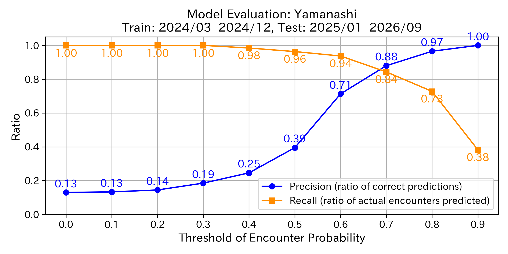
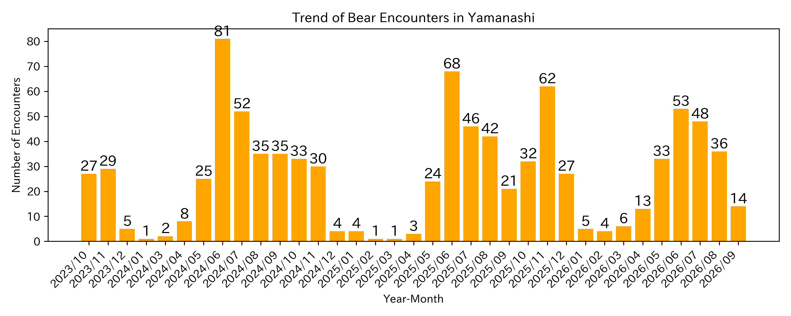

This map uses an AI model developed by the Fukazawa Laboratory at Sophia University
to predict bear encounter probabilities across Yamanashi based on local data.
Red markers indicate high encounter probabilities, while yellow markers show lower risk areas.
Each marker represents an area that requires caution, not a specific point.
“×” marks indicate recent bear encounters.
Areas without “〇” markers are excluded from predictions due to insufficient data.
This prediction map is designed to raise awareness. Always cross-check with other local and official information before acting.
Even if a marker appears red, it does not mean you will definitely encounter a bear. Likewise, yellow or pale markers do not guarantee safety.
The chart below shows the model’s accuracy. Accuracy varies depending on the threshold—the encounter probability at which the model decides “a bear is present.”
Lowering the threshold reduces missed encounters but increases false positives (high recall, low precision). Raising it has the opposite effect (low recall, high precision).
Because of this trade-off, you should act cautiously even in areas with low predicted probabilities.

How have bear encounters increased?
The bar chart below shows monthly bear encounter counts in Yamanashi over the past three years.
Seasonal peaks are visible—encounters often increase in spring, early summer, and autumn.

Technical References:
This map is based on the following publications: 1. Shin Nakamoto & Yusuke Fukazawa. “Bear warning: predicting encounters using temporal, environmental, and demographic features.” International Journal of Data Science and Analytics (2025): 1–19. Link 2. Shin Nakamoto & Yusuke Fukazawa. “Developing a bear encounter prediction model and analyzing feature importance in Akita Prefecture.” IPSJ National Convention, 2025. Link 3. Shin Nakamoto & Yusuke Fukazawa. “Predicting human injuries caused by bears using large language models.” JSAI Annual Conference, 2024. Link
Unauthorized copying or redistribution of this map or its contents is prohibited.
For inquiries or permission requests, please contact: fukazawa [at] sophia.ac.jp